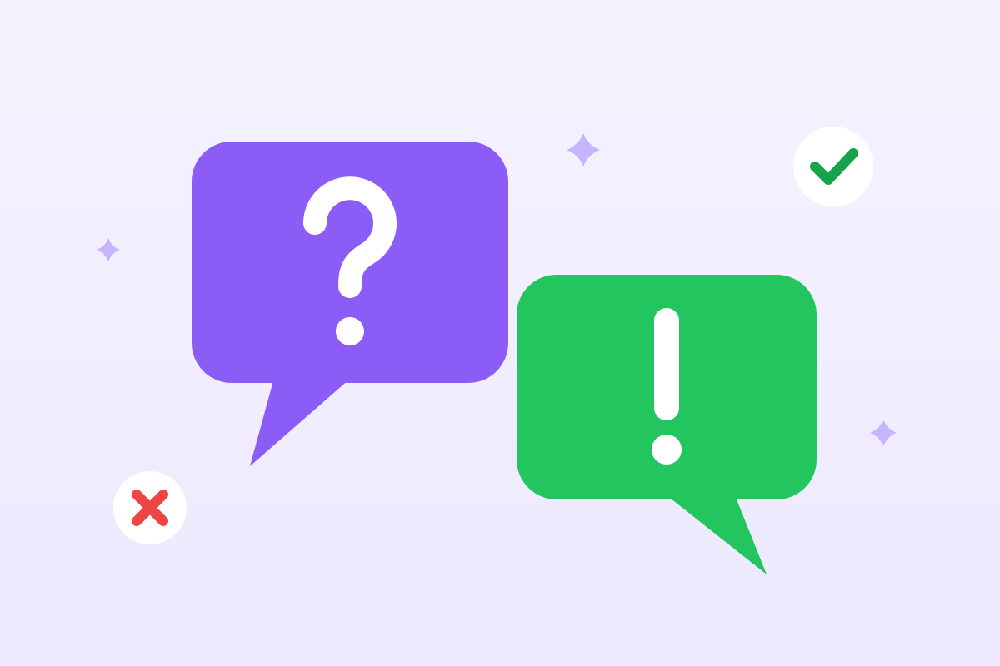

Миф или факт? Тест о еде, сне и спорте
О здоровье говорят все — от соседей до блогеров, и мифов вокруг не меньше, чем фактов. Проверьте себя: двенадцать утверждений, на каждое — один ответ. После каждого вопроса — короткое объяснение.

Миф или факт?
Для теста нужен включённый JavaScript. Все ответы — в разборе ниже.
Нажмите «Начать тест» — утверждения пойдут в случайном порядке.
Разбор: все ответы с объяснениями (осторожно, спойлеры)
- Чтобы похудеть, нужно полностью отказаться от углеводов. Миф. Вес зависит от баланса энергии, а не от одного нутриента. В исследованиях низкоуглеводные и другие диеты с одинаковой калорийностью дают похожий результат в долгую. Цельные злаки, бобовые и фрукты — полезные углеводы с клетчаткой.
- ВОЗ рекомендует взрослым не меньше 150 минут умеренной активности в неделю. Факт. 150–300 минут умеренной или 75–150 минут интенсивной нагрузки, плюс силовые упражнения два раза в неделю. Это примерно 30 минут быстрой ходьбы пять дней в неделю.
- Кофе обезвоживает организм. Миф. У кофе слабый мочегонный эффект, но при привычном умеренном потреблении жидкость из чашки кофе в целом остаётся в организме. Чай и кофе засчитываются в дневную норму жидкости.
- К недосыпу можно привыкнуть, и он перестанет вредить. Миф. Человеку может казаться, что он привык, но в экспериментах внимание и реакция при хроническом недосыпе продолжают ухудшаться. Взрослым нужно 7–9 часов сна.
- Если бросить тренировки, мышцы превратятся в жир. Миф. Мышечная и жировая ткань — совсем разные ткани, и одна не может стать другой. Без нагрузки мышцы уменьшаются, а если питание остаётся прежним, может прибавиться жир.
- Замороженные овощи почти так же полезны, как свежие. Факт. Овощи замораживают вскоре после сбора, и большая часть витаминов сохраняется. «Свежие» овощи, которые неделю лежали в магазине и холодильнике, иногда теряют больше.
- Чтобы убрать жир с живота, достаточно качать пресс. Миф. Локально «сжечь» жир упражнениями не получится: организм расходует запасы со всего тела. Пресс укрепляет мышцы, а уменьшить жир помогают питание и общая активность.
- Короткая прогулка после еды помогает сгладить скачок сахара в крови. Факт. Мышцы во время ходьбы забирают глюкозу из крови. Даже 10–15 минут лёгкой прогулки после еды заметно сглаживают её подъём.
- Коричневый сахар намного полезнее белого. Миф. Коричневый сахар — это тот же сахар с небольшой примесью патоки. Минералов в нём ничтожно мало, а калорийность почти такая же. Оба относятся к свободным сахарам, которые стоит ограничивать.
- Двигаться имеет смысл только отрезками от 10 минут — короче не считается. Миф. В рекомендациях ВОЗ 2020 года минимальную длительность отрезка убрали: любая активность лучше, чем никакой, и короткие отрезки тоже идут в зачёт.
- Утренний дневной свет помогает лучше спать ночью. Факт. Яркий свет утром настраивает внутренние часы: вечером легче заснуть, а утром — проснуться. Даже в пасмурный день на улице намного светлее, чем в комнате.
- Силовые упражнения полезны и пожилым людям. Факт. ВОЗ советует людям старше 65 лет силовые упражнения и тренировку равновесия: они сохраняют мышцы и кости и снижают риск падений. Нагрузку подбирают постепенно, при болезнях — вместе с врачом.
Как самому отличать миф от факта
- Ищите первоисточник. Хороший совет ссылается на исследование или рекомендации ВОЗ, минздрава, профессиональных ассоциаций.
- Насторожитесь от слов «чудо», «секрет», «врачи скрывают». Наука редко бывает такой драматичной.
- Одно исследование — ещё не правило. Надёжнее выводы, которые подтвердились во многих работах и обзорах.
- Смотрите, кто советует и что продаёт. Если совет заканчивается ссылкой на «уникальную» добавку — это реклама.
- Если сомневаетесь — спросите врача. Особенно когда речь о лекарствах, добавках и диетах при болезнях.